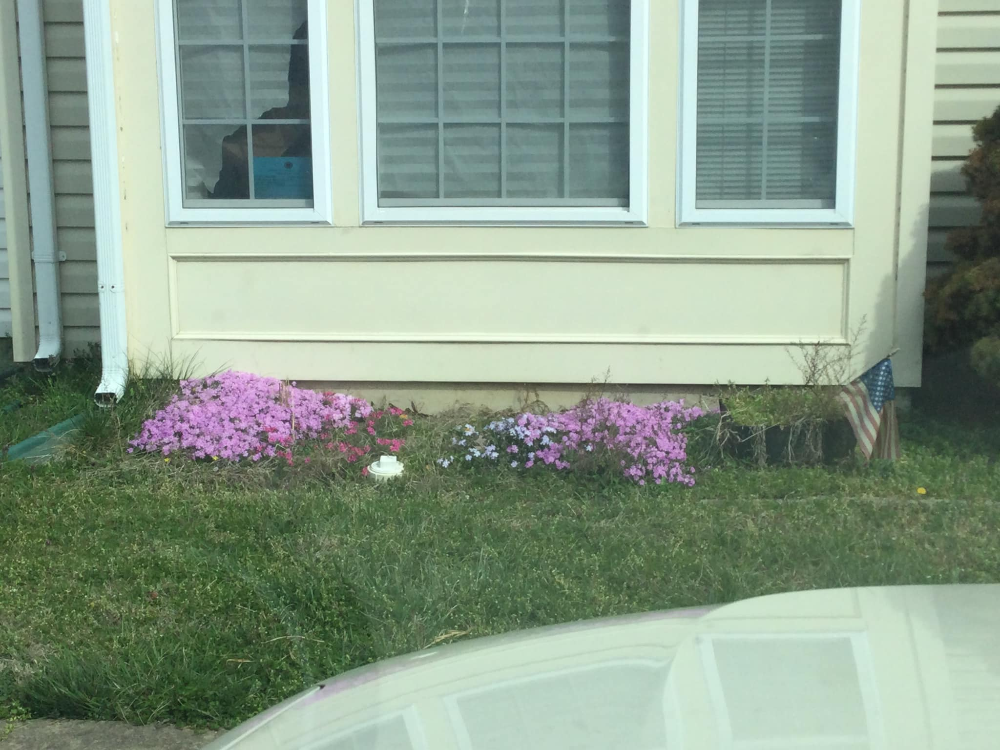
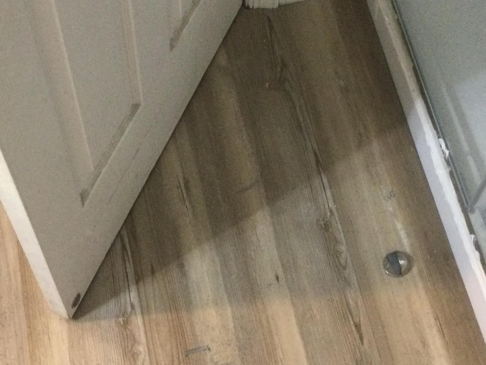

This is the original listing from 2011 when we bought the house. It has most of the original stats. Built in 2007 and at just under 2000 square feet it was listed as 4 bedrooms, 4 baths, but that's not quite right. By law a "bedroom" has to have a window and the top floor does not. That top floor "extra" room has it's own full bathroom with a window, but it's not a "bedroom". We used it that way, but by law I can't tell you that. So we have 3 bedrooms, one extra room, 3 full baths and a powder room.
As they say, location is everything. This house is located within 90 minutes of DC, 60 minutes of Richmond, and 20 minutes of Fredericksburg or Waldorf. The area is pretty rural, but it's busy enough around Dahlgren itself. Within the local area, the house (blue star) is within walking distance of either gate into NSF Dahlgren (red), Potomac Elementary School (green) and even the growing Walmart commercial sector (yellow). So, while you may have cornfields not too far away, basic needs are around the area. The house is also part of an HOA, which plows snow, mows common areas, etc. but doesn't include any specific ammenities.
The house has been through some serious renovations since we bought it, especially in the last year. In order to prepare for the first renter, we corrected years of maintenance we never bothered with ourselves. My wife wants know if she still needs to move out now that it looks so much better.
Starting in 2019 we began making serious improvements on the house which culminated in 2023. These are the major improvements which we added in just the last few years.
The tree was removed from the front and the flower bed was planted with flox. Every spring the front yard is awash in blue, pink, purple, and white flowers. All the houses in the HOA have a wooden fence that surrounds the private back yard. Few of these have been upgraded in recent years, but we felt that our gate and fence needed to be replaced. The new fence stands out a bit among peers and the new gate allows rear entrance/exit on the property.

When we received the house it had been attacked by the previous resident. Walls had holes and some doors were half hanging off the hinges. When we finally got around to repairing them, it was a major job. We learned to patch our own drywall, fit and hang doors, and replace broken light fixtures. We preferred to use LED-based lights wherever possible as they are cheaper to run and don't require frequent replacement. Not only that, but the hanging "decor" lights were just tacky. Something out of a 1980s kitchen. The new fixtures are cheaper for the renter, you won't hit you head on them, and they look much better.
The original kitchen was done up in "standard american 90's". Wooden particleboard cabinets with vanilla appliances, countertops, and linulium flooring. While not wanting anything too outlandish, the kitchen and dining area needed a serious revision. For one thing, the cabinets were pretty drab so that anything else done would just look out of place next to those standard 1990's cabinets. We touched them up with a black galaxy resin that provided a dark accent to the whole space.

With the cabinets done, we decided to apply the same treatment to the countertops, making them burn proof, scratch proof, and quite elegant. We added a marble backsplash all around the kitchen to protect the wall and especially the drip edge where the two meet.
Working our way still lower, we replaced the linolium in the kitchen and the carpet in the dining room. This was an important step because no dining room should have a carpet. It just doesn't handle food spills. The new resin floors were a slightly lighter motif based on marble and silver/gold accents. Not only are they decorative and elegant for a dining party, they are also much easier to clean, sweep, and mop.
During the course of our time in the house we twice had a rude awakening when a washer failed. Both times the excess water flow drain failed and we finally found that the problem was in the house itself. We cleaned everything up and put down a metal drain pan to catch overflow. We also built in a drain and ensured that it properly connected with the overflow. Since then we have replaced the washer again and have had no further problems. Both the washer and the dryer have a few years on them but the in-house laudry is good. In the kitchen we installed all new appliances within the last year. New electric range and oven. New microwave. New garbage disposal. New refrigerator. New dishwasher. The whole ensemble is ready for new renters.
The master bath was particularly disappointing as it was apparently make for only for people with a 20 inch waist. By that I mean that WE are certainly part of the larger American population of today and we didn't appreciate a cleaning space that didn't feel relaxing. So, the bath was entirely redone, removing the smaller shower and tub in favor of a double sized walk in shower with glass doors. The remaining window space will serve nicely for towels, etc. and the floor was redone with wood-like panels. The decorative tin ceiling tiles add the last touch.


While the master bath was being fixed, we decided to add a glass shower door to the third bathroom. On the third floor the shower already has a sliding door. The new master bath, too. Why not the last shower which had been suffering from a flimsy shower curtain. The result is a bit narrow for me and a step up for the elderly, but perfect for kids and young adults while keeping bathtime splashes in the tub and not on the floor.

Carpet, paint, and trim in various placed around the house are the last touches on the various projects. Carpet arrived already and we finished 90% of the painting in time. The last little bits are being done all over the house as we prepare for the first renters.


Two of my children decided that they wanted to learn to use tools, to build things, to become compitent enough to take on big jobs in the future and so we undertook all of this as a family. It took some time and there may be some rough edges, but it was a family's work of love. We'll stand by it and make sure it work well into the future.